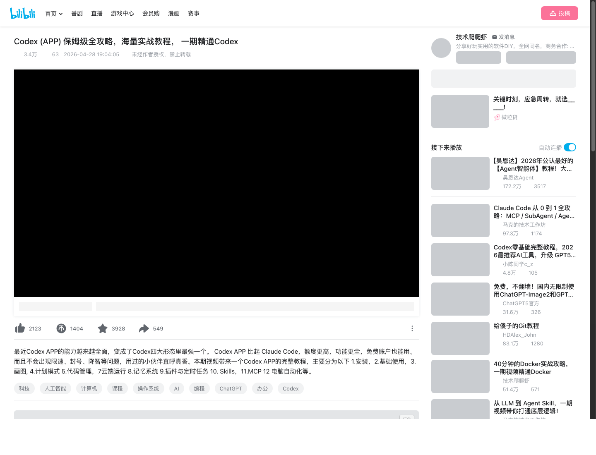
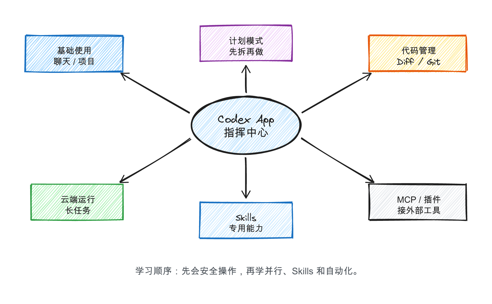
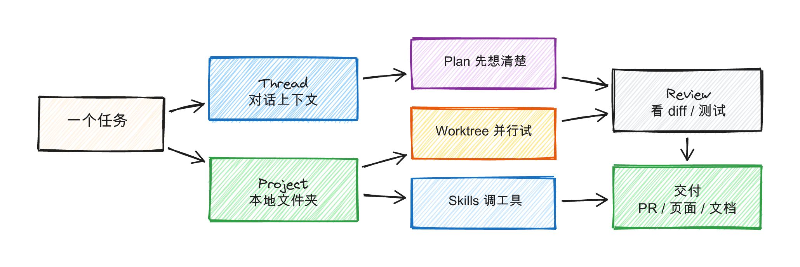

先抓住核心：Codex App 是“指挥中心”
如果只把 Codex 当成“写代码的聊天框”，你会错过它真正的价值。它更像一个项目指挥台：你把任务、项目文件夹和约束交给它，它用线程、项目、计划模式、Worktree、Skills、MCP 和自动化，把想法拆成可以审核、测试和交付的工作。
学习策略：先会安全地让它读项目和写小改动，再学并行开发、Skills、MCP 和自动化。顺序反了，就很容易变成“装了很多能力，但不知道哪里出错”。

这门课值得学什么
1. App 形态不只 CLI，不只编辑器插件，而是一个能管理多个任务线程的桌面工作台。
2. 计划模式复杂任务先拆解，再执行。适合网页、脚本、文档和 App 原型。
3. Worktree多个方案并行试，不污染主分支，适合探索和重构。
4. 代码管理看 diff、跑测试、写提交，把 AI 产出纳入正常工程流程。
5. Skills把反复做的工作变成可复用能力，例如生成图文课、整理课程卡片。
6. MCP / 自动化连接外部工具和周期任务，但建议在熟悉基础后再使用。
能力地图

标准工作流

跟做：第一天怎么用
建一个安全项目文件夹
不要一上来把整个电脑、公司仓库或重要项目交给 Codex。先建一个小文件夹，例如课程卡片网页、个人工具箱或文档整理实验。
Codex-Lab/
├── notes/
├── website-demo/
└── experiments/
创建 Thread，但先让它观察
第一条提示词要让 Codex 先看项目，再提建议，最后等你批准。
请先检查这个项目文件夹，告诉我里面有什么。
然后提出一个你可以安全完成的小任务。
在我确认之前，不要修改任何文件。
复杂任务先开 Plan
当任务超过 3 步，先让 Codex 输出计划、文件列表和验收标准。
我想做一个“课程链接整理页面”。
请先给出实现计划，包括页面结构、数据字段、需要创建的文件、验收标准。
暂时不要写代码。
看 diff，再决定是否提交
重点看有没有改错文件、引入陌生依赖、写入密钥或破坏原有结构。AI 可以很快，但审核权必须在你手里。
第二阶段再学 Skills 和 MCP
Skills 适合把固定流程沉淀下来，MCP 适合接外部工具。不要一开始就堆能力，先把“读项目、拆任务、改代码、审 diff”跑顺。
练习项目：课程卡片网页
这个练习最贴近我们的学习平台：用 Codex 做一个静态网页，展示 AI 编程课程。
请在当前文件夹里创建一个静态网页，用课程卡片展示这些 AI 编程课程。
要求：
1. 使用纯 HTML/CSS/JS，不要引入复杂框架。
2. 页面有筛选按钮：全部、Codex、OpenClaw、Claude Code、Stitch。
3. 每张卡片展示课程名、UP主、工具、难度、推荐理由和“打开课程”链接。
4. 先给出文件计划，等我确认后再写代码。
验收 1双击 index.html 能打开，卡片不挤、不溢出。
验收 2筛选按钮能工作，每个课程链接能跳转。
常见误区
| 误区 | 更好的做法 |
|---|---|
| 一上来让它“做完整 App” | 先让它写计划、文件列表和验收标准。 |
| 直接给全盘权限 | 只给项目文件夹，默认权限起步。 |
| 不看 diff 就提交 | 每次都看改了什么、能不能跑。 |
| Skills、MCP、插件全装上 | 先学基础，再逐步加能力。 |
| 把 Codex 当替代程序员 | 把它当执行力很强、但需要审核的项目成员。 |
来源与官方校验
这篇图文课只引用课程链接和公开页面信息，正文是原创改写。具体功能入口和权限策略以 OpenAI 官方页面为准，因为 Codex App 在 2026 年仍在快速更新。
- B 站课程来源：技术爬爬虾《Codex (APP) 保姆级全攻略》
- OpenAI Codex 产品页：Codex | AI Coding Partner from OpenAI
- Codex App 发布文：Introducing the Codex app
- OpenAI Academy 入门：How to get started with Codex